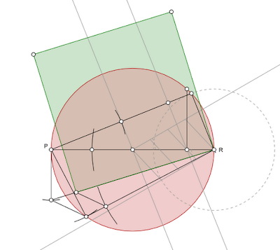

Resources and Reading Materials:

Reading materials for each seminar are listed on the course outline. Additional resources will be posted here as the course progresses.

Reading materials for each seminar are listed on the course outline. Additional resources will be posted here as the course progresses.
back to course